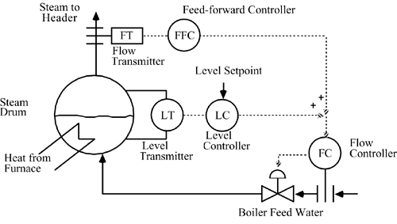

| [ Team LiB ] |
|
M9.5 Three-Mode Level ControlIn practice, a so-called three-mode level control strategy is used, as shown in Figure M9-3. The purpose of the flow controller is to reject boiler feedwater flow disturbances (due to upstream pressure changes or valve stiction, for example), while the feed-forward controller rejects steam demand disturbances. The level controller provides additional long-term corrective action. Figure M9-3. Control instrumentation diagram for three-mode steam drum level control. Develop a SIMULINK diagram for the 3-mode strategy, similar to that shown in Appendix M9.2. Tune the flow controller for tight performance (closed-loop time constant of roughly 0.1 minutes) and compare the 3-mode strategy with the standard feedback strategy for disturbances affecting the feed water valve position. |
| [ Team LiB ] |
|